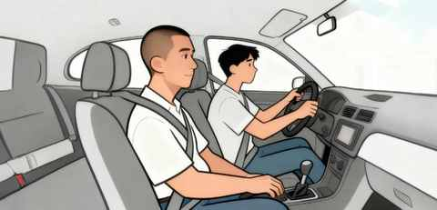
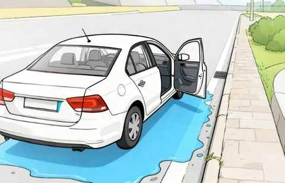
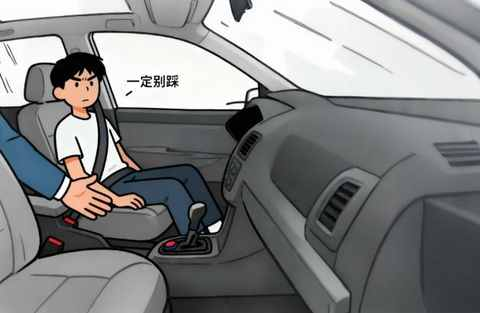
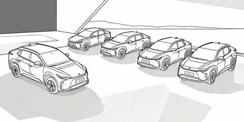
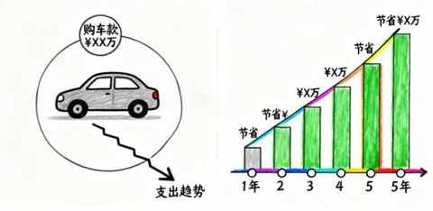
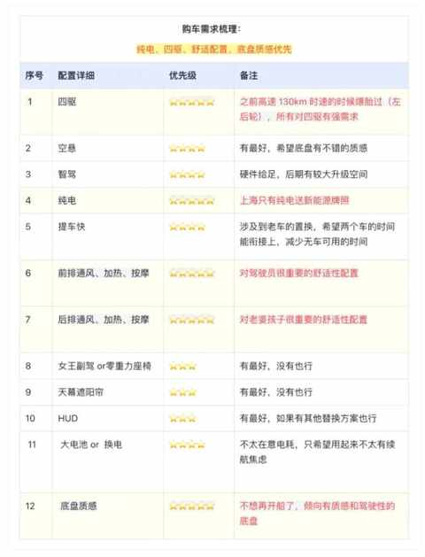
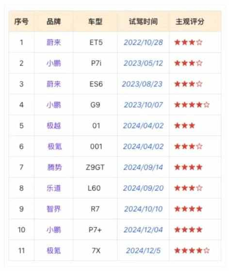
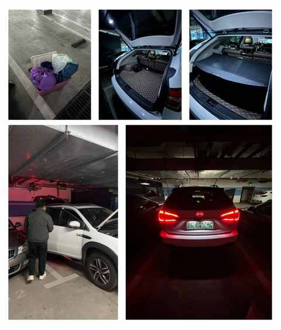

别再问我省多少油钱了！作为 8年新能源车主，我想说：买它，是为了一种新的体验
一、学车的故事
不可否认，我们中的绝大多数，第一次开车都是在学驾照的时候，可能在高考后、大学时、工作后……
我们在驾驶座握紧方向盘，教练在右边的副驾驶随时发号指令，时刻准备刹车。

虽然考驾照已经是 8 年多前的事情，现在依然记得很清楚，在路考的一件小事：
我是全车最后一个考试的，最后一个项目是靠边停车，要把距离控制在 50cm 左右，好巧不巧要停的地方有一摊水，我自然是坚定的停了过去，果然是满分通过考试，副驾下车的位置就在这一摊水上。

考官确认好成绩之后，让我下车和他交换座位，他来把车开回考点，我走到副驾的位置的时候，考官很认真的和我说：“如果自己开车遇到这样的位置，就往前开开再停车……”。

待我坐到副驾驶系好安全带之后，他又指了指副驾的刹车，让我一定别踩。可能之前不止一次遇到误踩刹车的情况吧，语气明显比刚才提醒停车的时候重很多。
二、只算 经济账，买车不划算
如果只算经济账，买车绝对是不划算的。
全年的工作日，如果按单休计算在 300 天左右，如果按双休计算在 250 天左右，取中位数 275 天来计算打车费用，打车费往返按每天按 50到100 元计算，则有下面的计算结果：
- 275 x 50 = 13750元
- 275 x 100 = 27500元
如果全年的每一个工作日，都打车上下班，花费在 1.375～2.75万元。

假设买一辆 15w 的车，与打车费用做匹配，则有下面的计算结果：
- 15 / 1.375 = 10.9 年
- 15 / 2.75 = 5.45年
综上所述，不难发现，如果买一辆 15w 的车，排除掉保险费、电费、税费、油费等其他费用，仅考虑车价的情况下，这些钱至少能支持打车 5-10年或更长时间。

打车不仅省钱，而且更省心，不用自己开车，更不用担心停车的难题，更没有停车费的额外支出。
三、以人为本， 回归需求和体验
在用车的时间越长，行驶的里程越多之后，才更能感受和了解到自身的需求，以及家庭的需要。
当到了换车的周期或有一个契机想换车的时候，在以人为本的基础上，回归需求和体验，可能是我们普通人选择一辆家庭唯一用车，比较稳妥的方式之一。
第一辆车的选择要比选第二辆的时候，简单太多，但这个心路历程必须从第一辆车开始聊起。
1️⃣ 快速决策的第一辆车
在 8 年前，买第一辆车的时候，多少有点冲动的成分，因为2 月中旬老婆生娃出院，在医院门口被多个出租车拒载，很是愤慨。
当天回到家，有了一个坚定的驾照拿到当即买车的想法， 2017年的 3 月初，驾照拿到手之后，很快便订车了，只跑了一家 4S 店，同年 5 月份顺利提车。
也是基于2017 年的时候，在预算范围内的新能源SUV很少，最终选择是：比亚迪唐 2015年款， 几乎是当时最性价比的选择。
由此，第一辆车快速完成了决策，这辆车也是家庭唯一用车。
聊聊人生第一台车：比亚迪唐！2017-2024，真实使用体验分享
整体使用的满意度尚可，如果满分 10 分，能给到 7 分。作为一款发布于 10 年前的插混车型，其空间表现和动力都不错，但馈电时和高速的油耗偏高，双离合的顿挫感也是很让人难绷。
毫无疑问，我们对车的很多认知，都是建立在第一辆长期使用车辆 的基础上的，由此，在通过一段时间的试驾，才梳理出来购车需求。

2️⃣ 谨慎选择的第二辆车
① 历时一年多的试驾
现在要试驾新能源车，成本是偏低的，基本在一个大型商场都有 10 来家的展位或门店，只要有展车的，都能约试驾，而且很多家都有上门试驾的服务。

上面的评分都特别主观，而且都是用第一辆车做的横向对比，如果和你的感受有差别，那肯定是你的感受更准确。
试驾这么多车，原因很简单：
1）开的车过少
除了驾校的车，自己的车，也就开过几次 Model 3 和 Model Y
2）新能源车型和品牌都多
这么多新能源车型，不去试驾感受下有点过于可惜
3）相信国产新能源车
第一辆车便是国产新能源车，愿意相信其他国产新能源车也是不错的
② 聚焦需求和体验
作为家庭唯一用车，满足家庭用车需求是最基本的，个人认为在体验升级方面，也是选择新能源车的时候必须考虑的。
用车 体验的 明显 提升，无疑能给生活带来很多积极的变化，至少你会 更愿意开车，家人坐车的心情与感受也会变得更好。
开了7年混动后投向纯电9个月，一个中年新能源车主的生活有了哪些新变化？
由于每个人每个家庭需求的不同，很多时候，即使两个人两个家庭选的是一款车，其决策逻辑和用车场景可能有天壤之别。
在不断的试驾和思考的过程中，初步有了一个决策理念：
买它，是因为在满足用车需求的同时，还有一种新的体验。
③ 扎心的卖车过程
由于涉及到置换补贴，在确定车型之后，首先要做的事情是，把旧车卖掉。

卖掉的车价就不提及了，实在是过于扎心，只能感叹国产新能源车的发展速度是惊人的。在 2024 年的档口，选择一款新能源纯电 SUV 是一件极其不容易的事情：车型多、价格卷、信息庞杂……
过来收车的二手车商指着他的车，无奈的说着，买了不到一年已经亏了 10w+，只能一直开了。
这个卖车的过程也提醒我一个道理：向前看，专注用车体验才是更重要的事情，而非纠结新款价格的变化和二手车价格的腰斩，更不在于比能耗比每公里花多少钱。
四、结语
回想学车时考官的那句“有水坑就往前开一点，再停车”的提醒，何尝不也是一种生活哲学？
与其困在“划算”与“不划算”的计算里，不如看清自己真正的需求，专注提升用车体验，平稳地驶向更远的地方。
车，终归是一个与我们关系更加密切的工具，而我们的目的，是开着它去体验更广阔的人生。
近期文章
35岁的这个11月，我竟挑战了这么多“第一次”
日更，是不断了解自己的过程
90年，35岁，日更90天，有了这 3 个意外收获
听播客5年，日均108分钟：这3个收获，让我认识到“声音”的力量
小米高端化成了吗？拿15S Pro当主力机4个月，我有这5个真实感受
嘿！还记得“为QQ等级挂机”的岁月吗？来晒晒你的等级吧！
11 个月，开极氪7X跑两万公里，用车总结及好物分享
一个长居省外中年人的合肥印象：记2025的年第4次合肥行
中年减肥成功2年后，才发现运动形式真不重要，守住这3点才能不反弹！
我的两个配图利器：两个APP强强联合，实现1+1 > 2的视觉升级
别慌！和所有Intel版Mac用户共享：3个让我们继续用的理由和2个续命秘籍